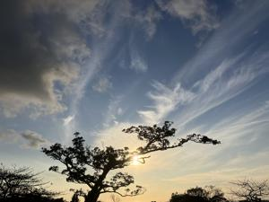
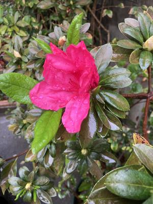
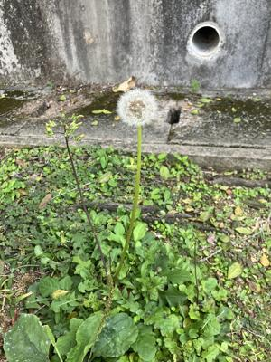

うるがいの話 ある日
最新: 迷信【うるがいの話 ある日】とは 一日だけのプログです
『うるがいの話』の最新一日だけのプログで、通信料が少なく経済的だ。カニの画像をクリックすると全ての日付が載る『うるがいの話』サイトを表示します
|
|
【うるがいの話】 うるがい(ｳﾙｶﾞｲ urugai)とは、『もずくがに』の名前でとても大きくなります。 |
|---|---|
|
|
【カミマヤーの話】 猫のことを方言でマヤーといいます。カミマヤー（kamimayaa）とは、神の猫のことです。 |
|
【たながぁの音楽】 たながぁ（ﾀﾅｶﾞｰ tanagaa）とは手長えびのことで、何種類かあり大きいのは車 エビぐらいになります。 |

|
【ぶながぁの話】 ぶながぁ(ﾌﾞﾅｶﾞｰ bunagaa)とは、赤い髪の毛、赤い身体、そして身長は１ｍ２０ｃｍ ぐらい、川の蟹を食べているの目撃された。場所は沖縄県国頭郡大宜味村のと ある村僕の隣近所に住んでいる爺さんから、聞いた話です。 |
|
|
【ギーマの話】 ギーマ(giima)とは、山原の里山に咲くスズランに似た、 花を付けます。実は食べられます、 気が付くと口の周りが紫になっています。 |
2026年02月27日 (金）迷信
15:52

一家に二人が続けて亡くなると、三人目が続かないように『人形
の墓』を作って弔う習慣があったそうです。イセが１０歳のとき
、父が病で亡くなり、ほどなくして母も病で急死した。子供のイ
セはわら人形を入れた「人形の墓」を作れば３人目が死ぬのは避
けられるという言い伝えを〝迷信〟だと無視したところ、兄が亡
くなってしまった。一人残されたイセは慌ててわら人形をこしら
え、人形の墓を作ったものの、時すでに遅し。自身は大病にかか
って生死をさまよい、借金に生活苦、親戚にもお荷物扱いされて
追い出され、周囲からは「言い伝え通り呪われた」と避けられて
生きてきた、と悲しく語るシーンが描かれた。
父親が亡くなり、直ぐに次女が亡くなりました。法事に山原へ行
くと、隣近所の叔父さんたちが、深刻な表情で友引に葬儀（父親
）をしたから・・・と、幼なじみのお父さんが、不幸が続かない
ように家で飼っている鶏を、殺しました。
それから、１４年後母親が病気で亡くなり、四十九日を終え半年
後三女が脳溢血で亡くなりました。法事に来た親戚は家族で一人
残った私に『大丈夫か』と心配していましたが、一応生かされて
います。なお上は、朝ドラの物語です。

